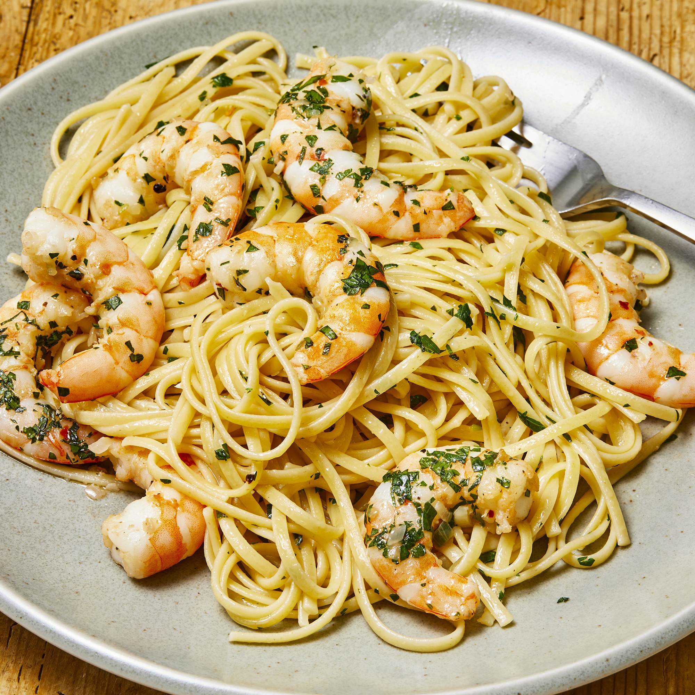

Shrimp Scampi Pasta

Easy to make shrimp scampi on a linguine platter. You'll be blown away by how simple and quick this fan-favorite dish is cooked.
This dish is an aromatic seafood pasta that will completely blow away your taste buds. By using large shrimp with a delightful
combination of toppings and mouth-watering sauce, you'll create an unforgettable dish.
Ingredients
- 16oz pack of linguine
- Unsalted butter
- Extra-virgin Olive Oil
- Shallots and garlic
- White wine
- Lemon Juice
- Kosher salt, group black pepper, dried red pepper flakes
- Parsley
Steps
- Boil the pasta in salted water. While boiling or ahead of time, devein the shrimps. If frozen, let thaw before boiling.
- Drain pasta and hold aside.
- Cook the shrimp for 5 minutes. If cooked for too long, they will turn tough. When the shrimp begin to show color, they will be ready.
- Place shrimp on top of the drained pasta. Season as needed.
Go Back